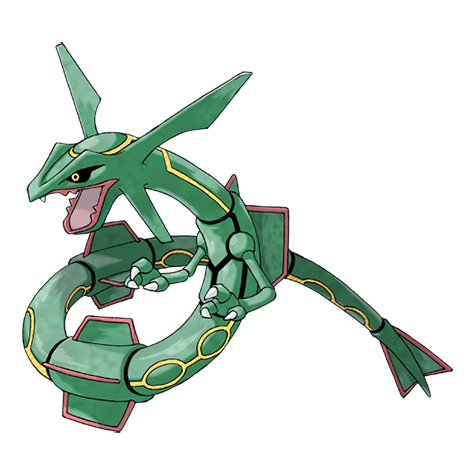
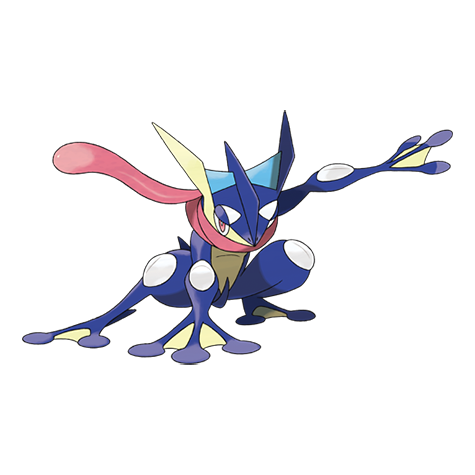

Hello!
Photo credit: Daniel Padilla
Hello! Holla! Bonjour! Ciao! Konnichiwa! Annyeonghaseyo! Kamusta ka-su! My name is Albert Benedict L. Cortes, but you can call me Daniel, I mean Albert/Bedek rather.
- Program: BS Computer Science
- Year level: First year
- School: Bicol University
About Me
I am 18 years old, from Baleno, Masbate, and a first year Computer Science Student in Bicol University.
I love nerding about stuff but I am also physically active. I plays different types of sport. i want to be succesful to give my family the life that they deserve.
My Path into Computing
I chose Computer Science because I believe that if I hone my skills in programming, I could land a job that will be in demand with a high-paying salary in the future. I am also fascinated by how AI works and I would like to create one for myself.
Fun fact about me: My Tito was also a ComSci graduate and he had a PC setup when he was still
in the Philippines and I started playing Counter Strike and Fishing Frenzy at age 3.
My Tito was my inspiration in becoming a ComSci Student.
My Favorites and Skills
Hobbies
- Billiards
- Running
- Dancing
- Watching Cartoons and Superhero Movies
- Pokemon
Skills
- Never Gives Up
- Fast Learner
- Enthusiastic/Explorative/Likes to try new things
One website I enjoy visiting is 7reels because I love to watch shows and movies on a pirated(illegal website) WHAHAHAHA.VERY RECOMMENDED, VERY HIGH QUALITY
My Top 10 Favorite Pokemon
| Photo | Name | No. | Type | Pokedex Entry | Region |
|---|---|---|---|---|---|
 |
1. Rayquaza | #384 | Dragon / Flying | A dragon that lives in the ozone layer high above the clouds and is almost never seen. It is said to have calmed the fight between Groudon and Kyogre. | Hoenn |
 |
2. Charizard | #006 | Fire / Flying | It soars through the sky searching for strong opponents. Its flame can melt boulders, but it never aims it at weaker foes. | Kanto |
 |
3. Greninja | #658 | Water / Dark | So fast that it is hard to even see, it throws razor-sharp water shurikens that can cut through metal. | Kalos |
 |
4. Lucario | #448 | Fighting / Steel | It reads the aura of living things to sense feelings and find opponents from far away. It is very loyal to Trainers it trusts. | Sinnoh |
 |
5. Sceptile | #254 | Grass | The sharp leaves on its arms can slice through thick tree trunks. It moves through the forest very fast and guards its home. | Hoenn |
 |
6. Marshadow | #802 | Fighting / Ghost | A Mythical Pokemon that hides inside the shadows of people and Pokemon, staying quietly out of sight. | Alola |
 |
7. Gengar | #094 | Ghost / Poison | It hides in the dark and makes the air feel colder when it sneaks close. It likes to copy shadows and scare people. | Kanto |
 |
8. Metagross | #376 | Steel / Psychic | Its four brains work together and make it smarter than a supercomputer. It pins down prey with its heavy steel body. | Hoenn |
 |
9. Garchomp | #445 | Dragon / Ground | It tucks in its body and flies at jet-plane speed. It hunts from the sky and rarely lets its prey escape. | Sinnoh |
 |
10. Bisharp | #625 | Dark / Steel | It leads a group of Pawniard and gives them orders. The blades on its body get sharper the more it fights. | Unova |
My Goals
- Repay my parents and spoil my siblings
- Be rich
- Become a cadet of the Philippine National Police Academy (PNPA)
My main goal is to be a cadet of the PNPA. I did not pass the Neuro-Psychiatric exam, but I am still hoping to pass it in the next 4 years.
My ultimate dream was to become a cadet/officer of the Philippine National Police Academy because I want to be a person capable of serving the community and because it is a one time trip in becoming successful(during your 4 year college there, you'll have a salary of 45k pesos a month, and after you graduate you are istantly promoted into a lieutenant). Unfortunately, I failed the Neuro-Psychiatric Exam last year and was enrolled in BU. I took the exam again and I passed this November of 2026. I hope that this is my time.
Reflection
I have learnt a lot from CS101, at the start of classes, I have zero to no knowledge about computer programming. But with the help of Sir Johnry and the other Professors, I started building my foundation, I learned about the Hardware and Software Components, The different syntax in C, the Algorithm which is one of the most important, and THIS, I learnt how to make my own webpage. I was an ignorant, but now--I am a Computer Science Student.